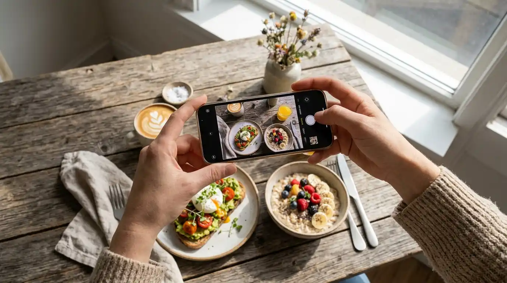

Daftar Isi Panduan 10 Poin
- 01Kuasai Karakter Kamera Smartphone Anda Sebelum Memotret
- 02Seni Memanfaatkan Cahaya Alami Dekat Jendela
- 03Tiga Sudut Emas Pengambilan Gambar Sesuai Karakter
- 04Menata Properti dan Penataan Makanan (Food Styling)
- 05Menangkap Momen Aksi Hidup (Food Action Shot)
- 06Proses Pasca-Produksi (Editing Ringan Tanpa Filter Lebay)
- 07Studi Kasus: Peningkatan Penjualan Kedai Kopi & Seblak Lokal
- 085 Kesalahan Fatal Pemula Saat Memotret Produk
- 09Tanya Jawab Seputar Fotografi Produk UMKM (FAQ)
- 10Daftar Cek Kilat (Checklist) Sebelum Menekan Tombol Jepret
Pepatah lama dalam dunia kuliner dan perdagangan menyatakan: "Mata kita mencicipi makanan jauh sebelum lidah sempat menyentuhnya." Di era digital saat calon pembeli berselancar di media sosial atau katalog pesan WhatsApp, visual produk adalah faktor penentu tunggal yang menggerakkan hasrat lapar dan keputusan pembelian.
Banyak pemilik warung makan, pembuat kue rumahan, dan perajin kriya lokal mengeluhkan sepinya peminat, padahal cita rasa masakan mereka diakui sangat lezat oleh keluarga dan tetangga dekat. Sering kali masalah utamanya terletak pada cara memotret: foto yang diambil dalam kondisi remang-remang di bawah lampu neon kuning redup, lensa kamera berminyak sehabis memegang bumbu dapur, atau sudut pengambilan asal-asalan yang membuat hidangan tampak layu dan tidak higienis.
Kabar baiknya adalah: Anda sama sekali tidak membutuhkan kamera profesional DSLR jutaan rupiah, lensa makro mahal, atau studio berlampu payung canggih untuk menghasilkan foto yang menggugah selera (*drool-worthy*). Smartphone kelas menengah yang ada di genggaman Anda hari ini sudah dibekali sensor kamera yang amat mumpuni. Yang Anda butuhkan hanyalah pemahaman tentang pencahayaan alami, penataan sudut (*angle*), dan sentuhan komposisi sederhana yang kami rangkum tuntas dalam panduan praktis ini.
1. Kuasai Karakter Kamera Smartphone Anda Sebelum Memotret
Sebelum meletakkan makanan di atas meja, langkah pertama adalah memahami keterbatasan dan kelebihan kamera ponsel pintar:
- Wajib Seka Kaca Lensa Kamera: Ini adalah aturan paling sederhana yang sering dilupakan 90% pedagang. Ponsel kita keluar masuk kantong celana dan sering dipegang tangan yang berminyak. Minyak tipis pada kaca lensa akan mendifraksikan cahaya sehingga foto tampak berkabut, kusam, dan kehilangan ketajaman detailnya. Bersihkan lensa dengan kain katun bersih atau kaos halus sebelum memotret.
- Gunakan Kamera Utama (1x Zoom Optik): Hindari menggunakan fitur digital zoom (*cubit layar*) karena digital zoom pada ponsel pada dasarnya hanyalah memotong piksel gambar (*crop*) yang mengakibatkan hasil akhir pecah dan berbintik (*noisy*). Lebih baik dekatkan fisik ponsel Anda ke arah produk.
- Kunci Fokus dan Pengaturan Kecerahan (AF/AE Lock): Sentuh layar ponsel pada bagian makanan yang paling menarik (misalnya taburan cabai merah atau lelehan keju) dan tahan selama dua detik hingga muncul ikon kunci gembok kuning. Geser ikon matahari kecil di sampingnya naik atau turun untuk menyesuaikan intensitas cahaya secara manual.
- Matikan Lampu Kilat (Flash) Bawaan Ponsel: Lampu flash kecil dari ponsel menembakkan cahaya keras langsung dari depan yang membuat makanan tampak berminyak kaku, meratakan bayangan alami, dan memudarkan tekstur asli masakan. Jangan pernah gunakan lampu kilat bawaan untuk makanan!
Bila Anda menjual minuman kopi susu dengan es batu dan lapisan gula aren, sentuh fokus tepat pada titik pertemuan antara susu putih dan lelehan gula aren cokelat. Titik kontras ini akan membuat foto terlihat tajam dan langsung memancing rasa dahaga pembeli.
2. Seni Memanfaatkan Cahaya Alami Dekat Jendela (Natural Light)
Cahaya adalah nyawa utama fotografi. Sumber cahaya terbaik di dunia untuk makanan adalah matahari, dan itu tersedia 100% gratis setiap hari. Rahasianya bukan memotret di bawah terik matahari langsung di halaman rumah (yang akan menciptakan bayangan hitam pekat dan makanan terlihat kering), melainkan cahaya pantul tidak langsung (diffused light) di samping jendela ruangan.
Aturan praktis mengatur pencahayaan di dapur atau ruang depan:
- Waktu Emas Pemotretan (Golden Hours): Waktu paling ideal adalah pukul 07.30 - 09.30 pagi saat matahari masih lembut, atau pukul 15.00 - 16.30 sore ketika cahaya memiliki nada hangat keemasan.
- Gunakan Tirai Vitrase Putih: Jika sinar matahari masuk menembus kaca jendela terlalu tajam, tutup jendela dengan tirai kain putih tipis atau selembar kertas kalkir. Ini berfungsi layaknya *softbox* studio profesional seharga jutaan rupiah untuk melembutkan gradasi bayangan.
- Cahaya Samping (Side Lighting): Tempatkan makanan dengan posisi jendela berada di sisi kiri atau kanan piring. Cahaya samping sangat unggul dalam menonjolkan tekstur renyah kulit ayam krispi, guratan daging bakar, atau anyaman kerajinan tangan.
- Cahaya Belakang (Backlighting) untuk Minuman dan Makanan Berkuah: Posisikan jendela di belakang produk dan potret dari depan. Cahaya tembus pandang akan membuat kuah bakso, sirup es buah, atau cangkir teh terlihat berkilau dan menyala segar.
"Trik Reflektor Modal Rp 5.000: Ambil selembar styrofoam putih atau kardus bekas yang ditempel kertas HVS putih polos. Berdirikan di sisi berlawanan dari jendela. Pantulan cahaya putih dari styrofoam ini akan menerangi sisi gelap makanan secara halus dan sempurna."
3. Tiga Sudut Emas Pengambilan Gambar Sesuai Karakter Produk
Banyak pemula melakukan kesalahan dengan memotret semua jenis dagangan dari satu sudut yang sama. Padahal, setiap jenis hidangan memiliki sudut pandang terbaiknya masing-masing untuk menonjolkan kelebihannya:
Sudut 45 Derajat: Sudut Pandang Mata Orang Makan (Dine-in View)
Ini adalah sudut pandang paling alami yang dilihat mata pembeli saat duduk di meja makan. Sangat cocok untuk hidangan dalam mangkuk berkuah (seblak, bakso, soto), piring saji nasi rames, cangkir kopi, dan martabak manis. Sudut ini memperlihatkan kombinasi antara kedalaman piring dan kemewahan isi atasnya (topping).
Sudut 90 Derajat (Flatlay / Top-Down): Tepat dari Atas Meja
Posisikan kamera HP sejajar lurus menghadap ke bawah meja. Sangat cocok untuk makanan yang memiliki tata letak artistik melebar, seperti bento box nasi kotak, piring sambal dengan aneka lalapan warna-warni, piza, kue pie, serta produk fesyen dan pernak-pernik kerajinan rajut yang pipih.
Sudut 0 Derajat (Eye-Level / Lurus Sejajar Meja)
Kamera sejajar dengan permukaan meja. Sudut ini sangat sakti untuk memamerkan produk yang memiliki susunan tinggi berlapis-lapis, seperti burger tebal, tumpukan pancake, roti bakar keju meleleh, atau botol kaca kemasan minuman kemasan literan.
4. Menata Properti dan Penataan Makanan (Food Styling) yang Rapi
Sebuah foto makanan yang hebat bukan hanya memamerkan makanan di atas piring, melainkan membangun cerita (*storytelling*) tentang kesegaran dan kehangatan proses pembuatannya. Namun, perlu diingat aturan nomor satu: produk utama adalah bintang panggung, jangan biarkan properti mencuri perhatian.
Trik penataan properti yang mudah dan murah:
- Gunakan Latar Belakang yang Bersih dan Netral: Meja kayu polos, talenan kayu jati perhutani, kain linen abu-abu muda, atau selembar karton manila abu-abu/putih doff adalah alas foto terbaik. Hindari taplak meja plastik bermotif bunga warna-warni mencolok yang membuat pusing mata yang melihat.
- Beri Bahan Baku Mentah Segar sebagai Hiasan: Jika Anda memotret sambal nusantara, taburkan beberapa butir cabai rawit merah mengilap, potongan bawang merah, dan separuh jeruk limau di sisi talenan. Jika memotret kue jahe atau kopi, taruh batang kayu manis dan biji kopi utuh di dekatnya.
- Aturan Bilangan Ganjil (Rule of Odds): Komposisi mata manusia secara psikologis lebih menyukai benda dalam jumlah ganjil ketimbang genap. Jika menyajikan kue risoles atau onde-onde di atas piring, sajikan dalam jumlah 3 atau 5 buah, bukan 4 buah. Tiga objek menciptakan keseimbangan visual dinamis.
- Kebersihan Piring dan Mangkuk: Sebelum menekan tombol shutter, selalu periksa pinggiran piring saji Anda. Seka ceceran tetesan minyak atau saus yang tumpah menggunakan tisu dapur kering. Kebersihan adalah cerminan higienitas dapur usaha Anda.
5. Menangkap Momen Aksi Hidup (Food Action Shot)
Foto makanan yang statis terkadang terasa kaku. Salah satu cara paling ampuh memancing air liur calon pelanggan di media sosial adalah dengan menampilkan aksi dinamis (action shot):
- Aksi Menuang Kuah atau Saus: Minta bantuan pasangan atau anak untuk menuangkan kuah kaldu panas dari centong ke dalam mangkuk bakso secara perlahan, sementara Anda memotret dengan mode rentetan (*burst mode*) untuk menangkap cipratan segar.
- Trik Tarikan Keju atau Seratan Daging: Angkat sepotong roti bakar atau camilan berisi keju mozarella hingga meleleh molor panjang. Pastikan makanan masih dalam keadaan hangat agar keju tidak mengeras kaku saat dipotret.
- Menangkap Kepulan Uap Panas: Uap panas masakan menandakan makanan baru saja diangkat dari wajan. Agar kepulan uap putih terlihat jelas di kamera HP, posisikan latar belakang berwarna gelap di belakang mangkuk dan gunakan pencahayaan dari arah belakang (*backlight*).
- Remahan yang Renyah: Patahkan satu buah pastel atau lumpia goreng tepat di depan lensa agar bagian dalam yang padat dan kulit pastry yang garing renyah terlihat memikat.
6. Proses Pasca-Produksi (Editing Ringan Tanpa Merusak Warna Asli)
Banyak pemilik toko terjebak menggunakan filter warna bawaan Instagram atau aplikasi kecantikan yang membuat warna sambal menjadi ungu neon atau nasi putih berubah menjadi kebiruan. Ini kesalahan fatal karena menurunkan selera makan. Editing foto produk kuliner tujuannya adalah mengembalikan warna asli makanan agar sama persis seperti saat dilihat oleh mata langsung.
Gunakan aplikasi gratis tanpa watermark seperti Snapseed (milik Google) atau Adobe Lightroom Mobile:
- Pencahayaan (Exposure): Naikkan sekitar +0.2 hingga +0.5 jika pemotretan Anda sedikit kurang terang.
- Kontras: Naikkan sedikit (+10 hingga +15) untuk memberikan ketegasan antara bagian terang dan gelap sehingga masakan tidak tampak datar.
- Suhu Warna (White Balance / Temperature): Jika foto Anda terlihat terlalu kebiruan dingin karena memotret di ruang ber-AC, geser temperatur ke arah kanan (hangat / warm) secara lembut (+5). Makanan selalu terlihat lebih lezat dengan temperatur hangat.
- Saturasi dan Vibrance: Naikkan vibrance tipis-tipis (+10) untuk menonjolkan warna hijau daun selada dan merahnya cabai tanpa membuat warna piring ikut-ikutan menyala palsu.
- Detail / Ketajaman (Sharpening): Tambahkan sedikit ketajaman (+15) agar tekstur renyah dan bumbu gurih terlihat nyata di layar HP pembeli.
Studi Kasus: Peningkatan Penjualan Kedai Kopi & Seblak Lokal
Kedai Seblak Bu Ratna di Sukabumi awalnya memotret menu seblak dengan kamera ponsel di bawah lampu neon dapur saat malam hari. Makanan tampak merah gelap berminyak dan kuahnya terlihat kecokelatan kotor, menghasilkan rata-rata hanya 15 mangkuk pesanan pesan-antar per hari.
Setelah mengikuti pelatihan visual Media UMKM:
- Ibu Ratna memindahkan meja foto ke samping pintu depan pada pukul 08.30 pagi dengan pantulan cahaya styrofoam putih.
- Mangkok diganti menggunakan mangkuk keramik putih polos berbingkai bersih.
- Di samping mangkok diletakkan jeruk purut segar dan beberapa cabai merah utuh di atas piring kayu kecil.
- Foto diambil dengan sudut 45 derajat menampakkan kerupuk kenyal, ceker empuk, dan kuah merah rempah yang bersinar cerah.
Ketika foto baru tersebut diunggah ke status WhatsApp dan katalog etalase direktori Media UMKM, pesanan pesan-antar melonjak hingga 65 mangkuk per hari dalam kurun waktu satu minggu pertama. Calon pembeli yang tadinya ragu langsung percaya pada kebersihan dan kenikmatan seblak Bu Ratna.
5 Kesalahan Fatal Pemula Saat Memotret Produk
Hindari kesalahan umum berikut agar kualitas foto dagangan Anda selalu konsisten:
- Memotret Makanan yang Sudah Dingin dan Kering: Makanan gorengan yang sudah dingin minyaknya akan menyerap ke dalam dan tampak layu pucat. Selalu siapkan set meja foto terlebih dahulu sebelum masakan matang di wajan. Begitu masakan diangkat dan ditata, segera potret dalam 5 menit pertama selagi masih berkilau segar.
- Menggunakan Piring Bermotif Terlalu Ramai: Piring bermotif bunga merah jambu mencolok akan membingungkan mata pembeli. Gunakan piring polos warna putih, hitam doff, atau mangkuk gerabah tanah liat alami.
- Latar Belakang yang Berantakan: Pastikan di belakang objek tidak ada jemuran baju, kabel colokan berserakan, atau tumpukan piring kotor tempat cuci piring.
- Bayangan Tubuh Sendiri Menutupi Produk: Jangan berdiri membelakangi sumber cahaya saat memotret karena bayangan badan atau ponsel Anda akan jatuh tepat di atas piring makanan.
- Memberi Tulisan dan Stiker Emoji Terlalu Ramai di Atas Foto: Jangan menumpuk tulisan promosi, harga berukuran raksasa, dan stiker emoji di seluruh permukaan foto hingga menutupi produk aslinya. Biarkan foto berbicara sendiri mengenai kualitas kelezatannya.
Tanya Jawab Seputar Fotografi Produk (FAQ)
Daftar Cek Kilat (Checklist) Sebelum Menekan Tombol Jepret
Cetak atau ingat daftar cek 5 langkah kilat ini setiap kali Anda hendak memotret produk baru:
- Sudahkah lensa kamera HP diseka bersih dari minyak?
- Apakah pencahayaan berasal dari cahaya alami samping jendela tanpa lampu flash?
- Apakah pinggiran piring saji sudah diseka bersih dari cipratan kuah yang berceceran?
- Apakah titik fokus sudah dikunci tepat pada bagian makanan yang paling menggoda?
- Apakah sudut pengambilan gambar (45°, 90°, atau 0°) sudah sesuai dengan bentuk produk?
Visual produk yang menarik adalah bentuk penghormatan Anda kepada jerih payah dapur dan karya tangan Anda sendiri. Mulailah berlatih hari ini dan buktikan sendiri bagaimana foto yang menggugah selera mampu melipatgandakan pesanan usaha Anda!